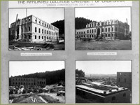
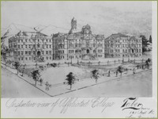
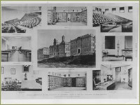

Buildings
BRICKS AND MORTAR: BUILDING THE AFFILIATED COLLEGES
by Nancy Rockafellar
by Nancy Rockafellar

The cornerstone of the medical school was laid on March 27, 1897, in a driving spring rainstorm. Beverly Cole, who by this time had been elected President of the American Medical Association, passed out champagne bottles.

Reporters noted that the rain and blowing sand did not dampen the celebration attended by Mayor James Phelan and former Mayor Adolph Sutro. Lieutenant Governor Jeter declared that the raindrops are "nature's tears of joy" for the occasion. "Spread out before us," he proclaimed, "we behold as beautiful and lovely a landscape as one could imagine: at our very feet Golden Gate Park with its green lawns, rising trees, and winding paths, while strains of music float softly through the air."
Buildings of the Affiliated Colleges while under construction
The completed Romanesque stone buildings of the Affiliated Colleges lined Parnassus Avenue. The Colleges of Dentistry and Pharmacy occupied the building on the left (east), and the College of Medicine was based in the building in thecenter. The third building was intended for the Hastings College of the Law, but the faculty considered it too far from the city's courts and refused to move from Pioneer Hall, where the college was then located. Instead, the building became an anthropological museum and housed archeological specimens and art objects included in the Phoebe Hearst Collection. A smaller building in the rear housed the College of Veterinary Science.

Three buildings were completed and occupied by October of 1898. The 1898 Brochure of the Medical Department of the University of California described the new facilities, including a new auditorium with a capacity of 1,200, spacious laboratories for pathology, bacteriology, chemistry and physiology, and "the finest dissecting room in the world at the present time." The author of the pamphlet also speculated that "the site of the City and County Hospital in contemplation by the Supervisors is to be within a few blocks of the College buildings, thus offering clinical advantages conveniently close at hand."
Perspective view of the Affiliated Colleges

Interior and exterior views of the Affiliated Colleges